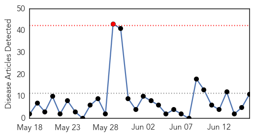
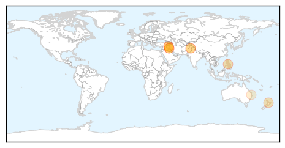
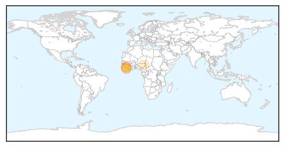

Measles
30-Day Web Trend
1 alerts, 0 warnings

30-Day Twitter Trend
0 alerts, 0 warnings

Article Locations
Article Confidences

Top Articles:
- 0.995
- WHO responds to deteriorating humanitarian situation in Iraq - Iraq
- 0.982
- Civil unrest leaves Iraqi population at risk for disease
- 0.969
- Iraq crisis prompts WHO action: Polio, measles and diarrhea of utmost concern
- 0.958
- Tuscola County Advertiser – Serving Eastern Michigan since 1868 Measles resurgent in the United States
- 0.903
- Hamilton faces Measles epidemic
- 0.881
- Parents fear vaccines after child deaths
- 0.850
- Measles epidemic growing in Hamilton
- 0.797
- Schools act swiftly as measles cases climb
- 0.697
- UN humanitarian agencies mobilized for half a million displaced in north Iraq
- 0.686
- Measles takes lives of 157 children
- 0.581
- Measles case after PNG flight
Top Tweets:
-
No tweets found for Jun 16, 2014
Ebola
30-Day Web Trend
6 alerts, 0 warnings

30-Day Twitter Trend
0 alerts, 0 warnings

Article Locations
Article Confidences

Top Articles:
Top Tweets:
-
No tweets found for Jun 16, 2014